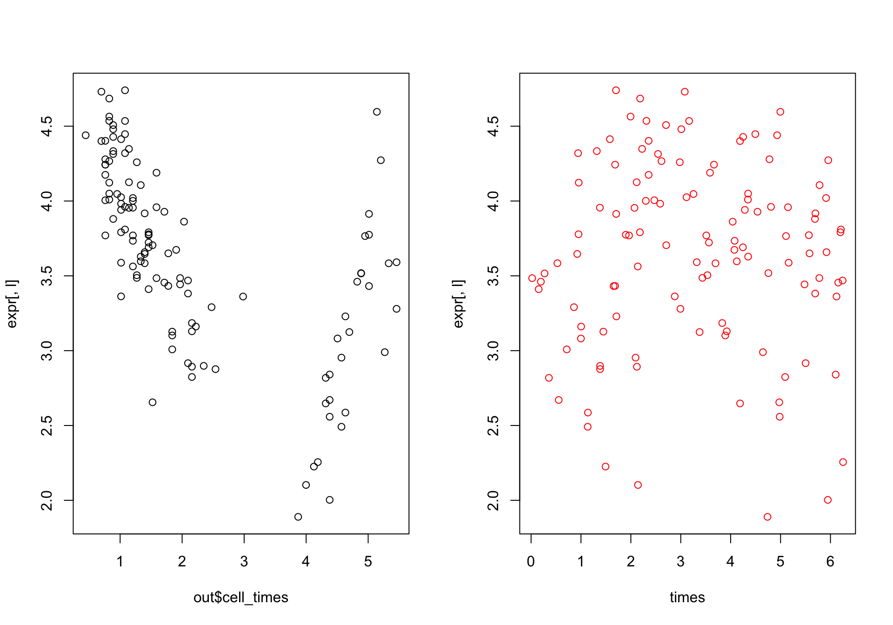
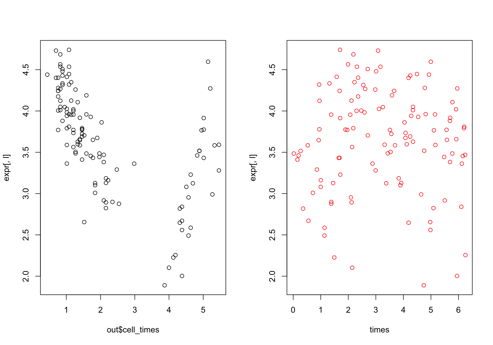 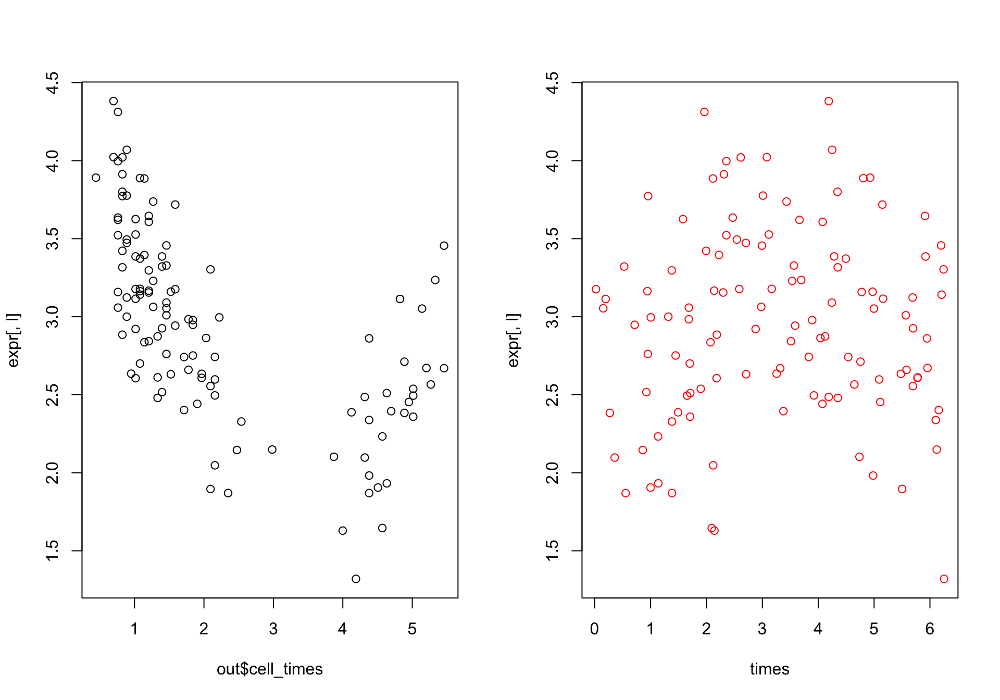
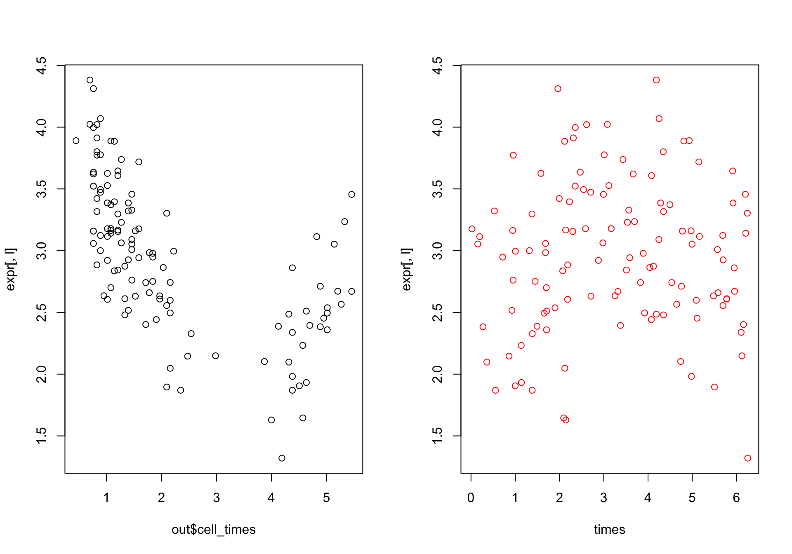 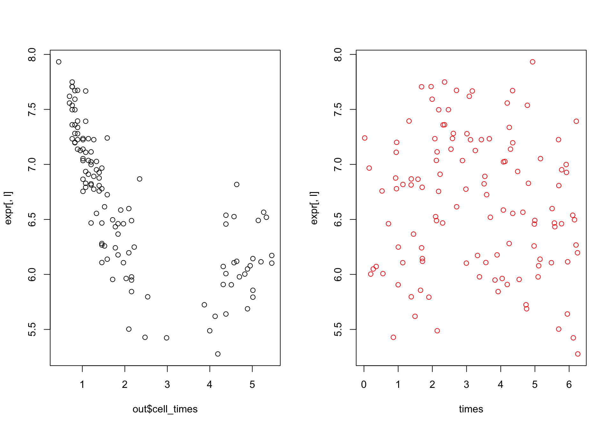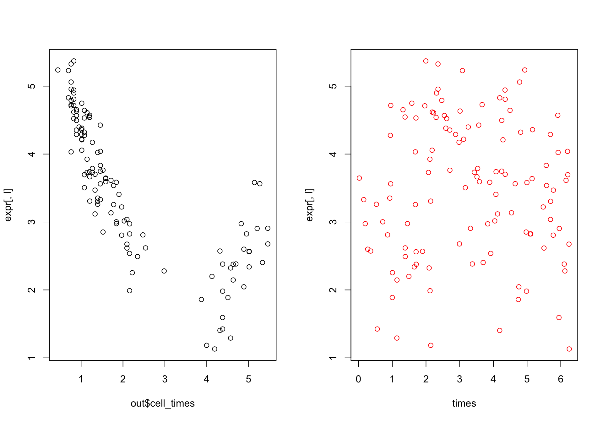
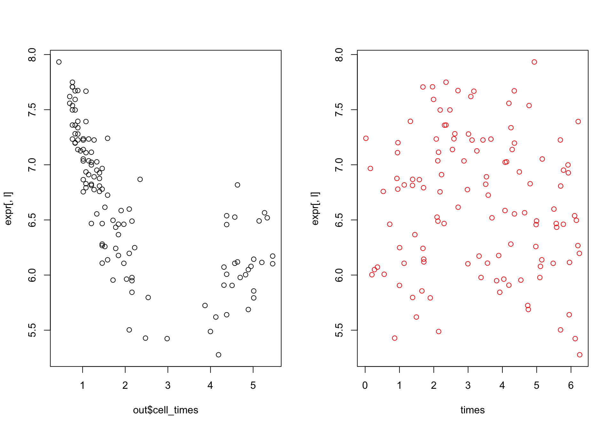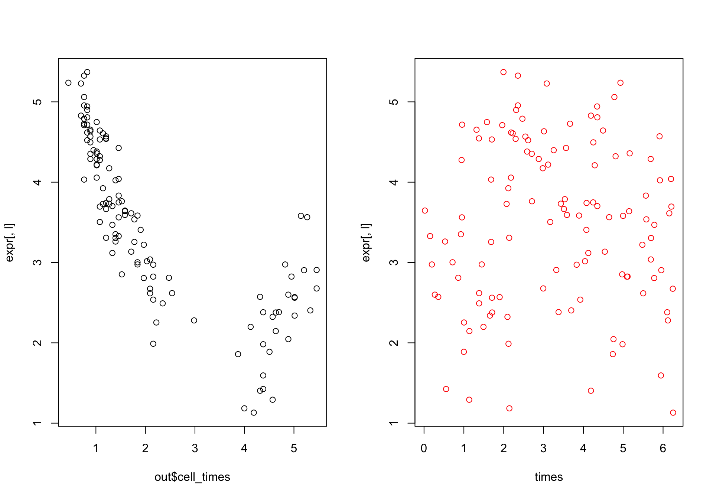

 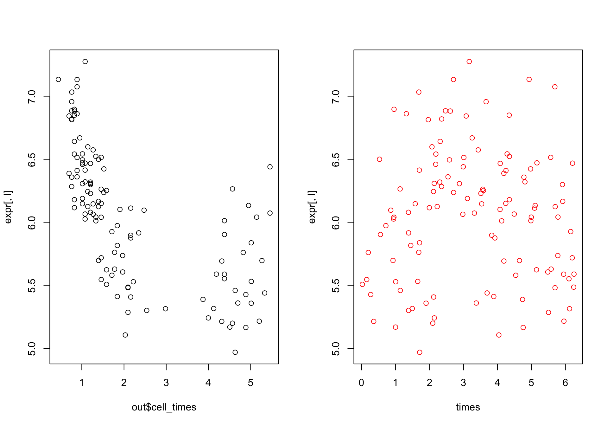
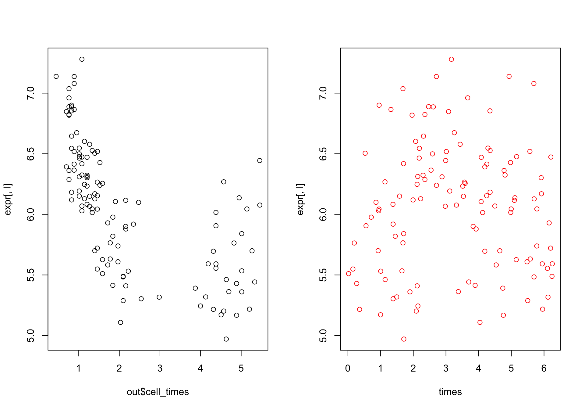library(cellcycleR)## Loading required package: binhf## Loading required package: wavethresh## Loading required package: MASS## WaveThresh: R wavelet software, release 4.6.8, installed## Copyright Guy Nason and others 1993-2016## Note: nlevels has been renamed to nlevelsWT## Loading required package: adlift## Loading required package: EbayesThresh##
## **********************************************
## adlift: a package to perform wavelet lifting schemes
##
## --- Written by Matt Nunes and Marina Knight ---
## Current package version: 1.3-2 ( 01/11/2012 )
##
## -+ packaged by MAN +-
## **********************************************
##
## adlift 1.3-2 loaded##
## Attaching package: 'adlift'## The following object is masked from 'package:EbayesThresh':
##
## postmean.cauchy##
## **********************************************
## binhf: Haar-Fisz functions for binomial data
##
## --- Written by Matt Nunes ---
## Current package version: 1.0-1 ( 24/04/2014 )
##
##
## **********************************************
##
## binhf 1.0-1 loaded##
## Attaching package: 'binhf'## The following objects are masked from 'package:EbayesThresh':
##
## ebayesthresh.wavelet.wd, negloglik.laplace, wandafromx## The following object is masked from 'package:wavethresh':
##
## madmad## The following object is masked from 'package:base':
##
## norm## Loading required package: zoo##
## Attaching package: 'zoo'## The following objects are masked from 'package:base':
##
## as.Date, as.Date.numeric## Loading required package: paralleldata <- get(load("../output/cellcyler_data_liver_mash.rda"))
times <- data$times
expr <- data$dataout <- bump_cell_ordering_class(expr, celltime_levels = 100,
num_iter=100,
start = NULL,
verbose = TRUE,
save_path="../output/cell_order_liver_bump.rda")out <- get(load("../output/cell_order_liver_bump.rda"))for(l in 1:100){
par(mfrow=c(1,2))
plot(out$cell_times, expr[,l])
plot(times, expr[,l], col="red")
}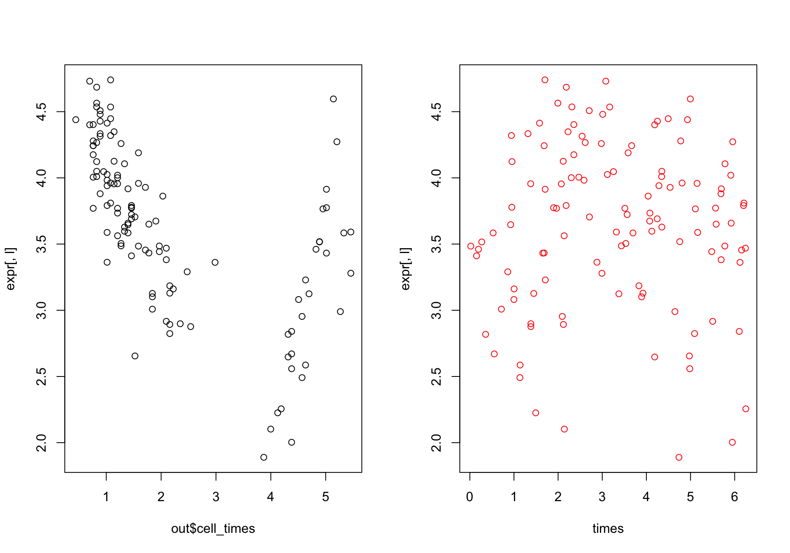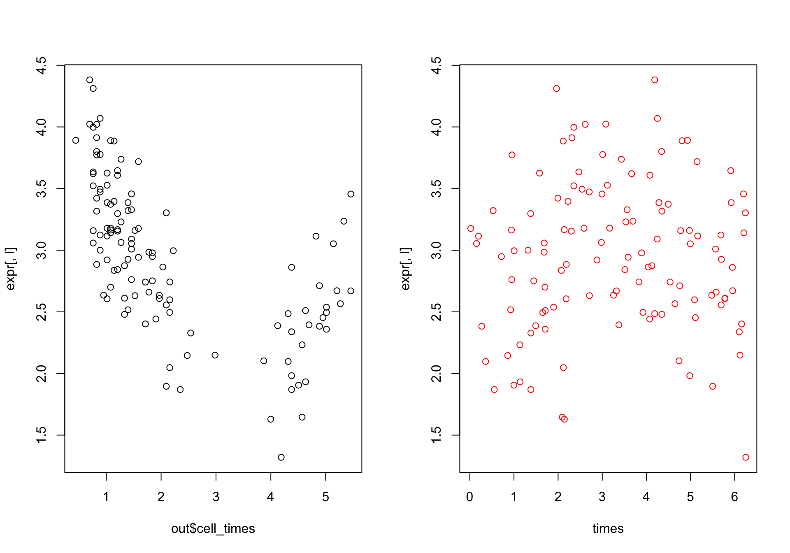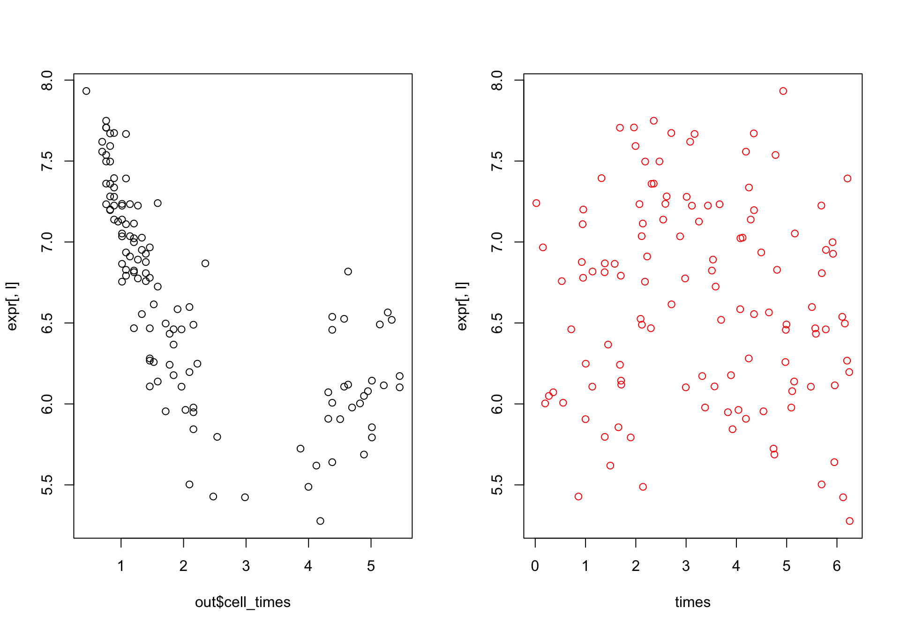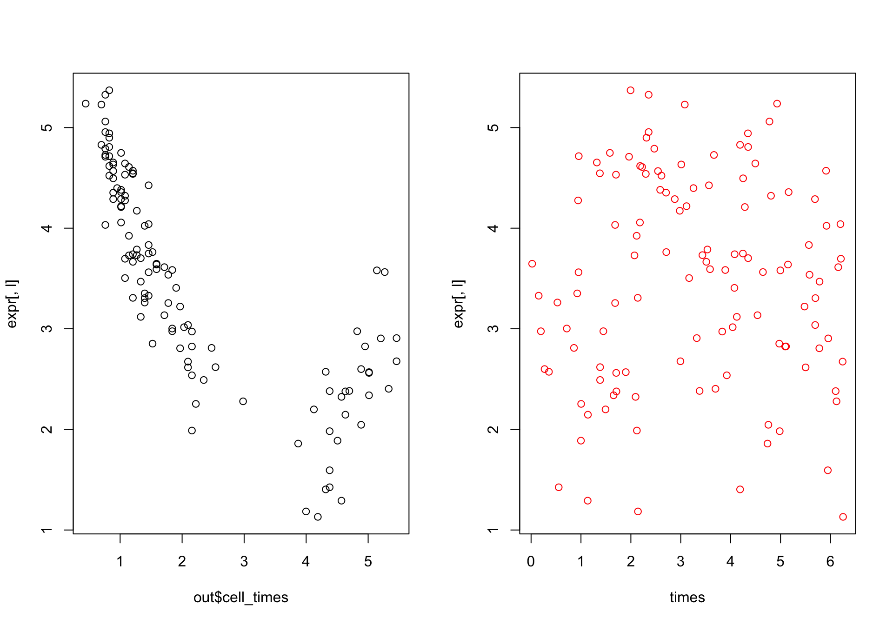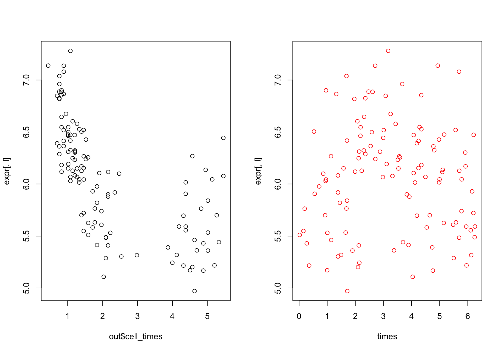
This R Markdown site was created with workflowr